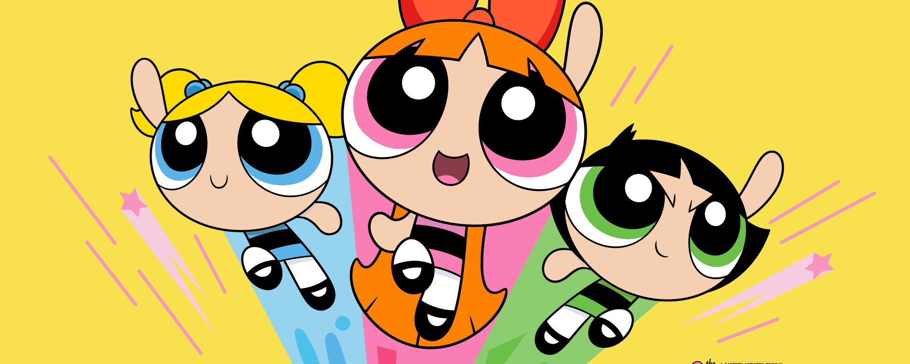

About the PowerPuff Girls
Powerpuff Girls are awesome. They're one of the most successful cartoons of the 90's. They're constantly saving the world from an ugly monkey.
PPG in action.
PPG's Characteristics
- They have great powers.
- They always fight the ugly monkey.
- They're the best.
PPG's Friends
Powerpuff Girls have many friends. Click on the links below to read more about them: